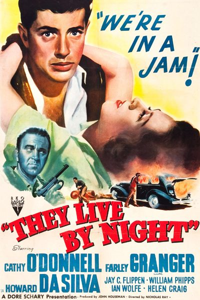

They Live by Night

Starring: Cathy O'Donnell, Farley Granger, Howard da Silva
Director: Nicholas Ray
Writer: Charles Schnee, Nicholas Ray
Producer: John Houseman
They Live by Night is a 1948 American film noir notable for being the directorial debut of Nicholas Ray and starring Cathy O'Donnell and Farley Granger. Based on Edward Anderson's Depression-era novel Thieves Like Us, the film follows a young fugitive who falls in love with a woman and attempts to begin a life with her.
Trivia
- Based on Thieves Like Us (1937 novel by Edward Anderson).
- The novel Thieves Like Us by Edward Anderson had been acquired by RKO in 1941 for $10,000 (equivalent to $218,900 in 2025).
- Numerous writers unsuccessfully tried to adapt the story as a screenplay.
- According to producer John Houseman, "I found the book and gave it to Nick to read, and he fell madly in love with it–as indeed I did, but Nick particularly was very familiar with that territory.
Filming Locations
- Los Angeles
- Filming began on June 23, 1947, with the opening scene, a tracking shot of Bowie, T-Dub and Chickamaw escaping from prison in a stolen car.
- The action sequence was filmed from a helicopter, making They Live by Night the first major studio production to do so, predating James Wong Howe's celebrated finale helicopter shot in Picnic by eight years (1955).
- Exteriors were filmed both on location and at RKO's movie ranch in Encino, but Todd's editing blended the sequences well.
Previous Showings
3 Runs • 1 Festival
Original Billings: 1 run (January 27, 1950)
Original Run: January 27, 1950 (Friday - Saturday)
All runs on record (3):
- January 27, 1950 (Friday - Saturday)Cathy O'Donnell, Farley Granger
- January 30 - February 2, 1997w/ Weekend in Havana, Gun Crazy
- March 14 - 16, 2003Film Noir and Pre-Codew/ In a Lonely Place